철도차량기사 (2005-05-29 기출문제)
1과목: 재료역학
1. 코일스프링에서 가하는 힘 P, 코일반지름 R, 소선의 지름 d, 전단탄성계수 G라면 코일스프링에 한번 감길때마다 소선의 비틀림각 Φ를 나타내는 식은?
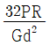
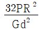
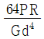
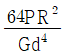
(정답률: 알수없음)

2. 그림과 같은 단순지지보의 B점에서 반력이 작용하지 않게 되는 하중 P는 몇 kN 인가?
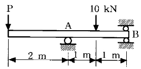
- 2
- 5
- 8
- 10
(정답률: 알수없음)
3. 그림과 같이 보 요소에 평면응력이 작용할 때 최대 전단응력은 몇 MPa 인가? (단, σx=40 MPa, σy=-15 MPa, τxy=10 MPa 이다.)
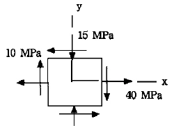
- 16.3
- 23.3
- 29.3
- 35.3
(정답률: 알수없음)
4. 길이 L인 봉 AB가 그 양단에 고정된 두개의 연직강선에 의하여 그림과 같이 수평으로 매달려 있다. 이강선들은 단면적은 같지만 A단의 강선은 탄성계수 E1, 길이 ℓ1 이고, B단의 강선은 탄성계수 E2, 길이 ℓ2 이다. 봉 AB의 자중은 무시하고, 봉이 수평을 유지하기 위한 연직하중 P의 작용점 까지의 거리 x는?
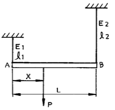
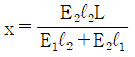
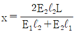
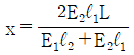
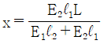
(정답률: 알수없음)
5. 축방향 단면적 A인 임의재료를 인장하여 균일한 인장응력이 작용하고 있다. 인장방향 변형률이 ε , 포아송의 비를 μ 라 하면 단면적의 변화량은 얼마인가?
- μA
- 2μεA
- 3μεA
- 4μεA
(정답률: 알수없음)
6. 길이 2 m, 지름 12 ㎝의 원형단면 고정보에 등분포 하중 ω = 15 kN/m가 작용할 때 최대처짐량 δmax는 얼마인가? (단, 탄성계수 E = 210 GPa)
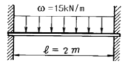
- 0.2 mm
- 0.4 mm
- 0.3 mm
- 0.5 mm
(정답률: 알수없음)
7. 그림과 같은 보에서 반력 R1, R2의 크기는 각각 몇 kN 인가?
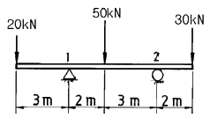
- R1 = 50, R2 = 50
- R1 = 20, R2 = 80
- R1 = 70, R2 = 30
- R1 = 65, R2 = 35
(정답률: 알수없음)
8. 그림과 같은 보에서 보의 자중은 무시하고, 왼쪽 A지점으로부터 거리 ℓ1인 위치에 모멘트 M이 작용할 때, 지점 A의 반력의 절대값은?
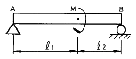
- 0(zero)
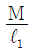
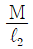
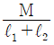
(정답률: 알수없음)
9. 좌굴(座堀, buckling)현상은 다음 중 어느 경우에 일어나기 쉬운가?
- 구조물에 복합하중이 작용할 때
- 단주에 축방향의 인장하중을 받을 때
- 장주에 축방향의 압축하중을 받을 때
- 트러스의 구조물에 전단하중이 작용할 때
(정답률: 알수없음)
10. 단면적이 A 탄성계수가 E 길이가 L인 막대에 길이방향의 인장하중을 가하여 그 길이가 δ 만큼 늘어났다면, 이 때 저장된 탄성변형에너지는?
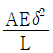
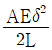
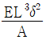
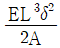
(정답률: 알수없음)
11. 그림과 같은 조인트(joint)가 전하중 P=1000 kN을 받도록 설계하고자 한다. 볼트의 허용 전단응력이 100 MPa일 때 볼트의 최소지름에 가장 가까운 값은?
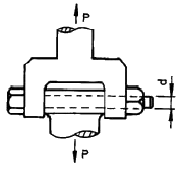
- 8 ㎝
- 10 ㎝
- 12 ㎝
- 14 ㎝
(정답률: 알수없음)
12. 그림과 같은 외팔보에 있어서 고정단에서 20 cm되는 점의 굽힘모멘트 M은 몇 kN·m인가?
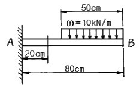
- 1.6
- 1.75
- 2.2
- 2.75
(정답률: 알수없음)
13. 길이가 ℓ인 외팔보 AB가 보의 일부분 b위에 ω의 균일분포하중이 작용되고 있을때 이보의 자유단 A의 처짐량은 얼마인가?
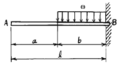
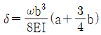
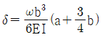
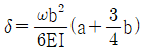
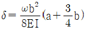
(정답률: 알수없음)
14. 지름 d= 3 cm의 재료가 P= 25 kN의 전단하중을 받아서 0.00075의 전단 변형률을 발생시켰다. 이 때 재료의 전단탄성계수는 몇 GPa인가?
- 87.7
- 97.7
- 47.2
- 57.2
(정답률: 알수없음)
15. 보의 자중을 무시할때 그림과 같이 자유단 C에 집중하중 P가 작용할 때 B점에서 처짐 곡선의 기울기각 θ을 탄성 계수 E, 단면 2차모멘트 I로 나타내면?
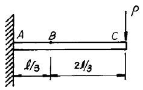
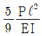
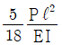
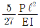
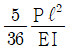
(정답률: 알수없음)
16. 그림과 같은 단순보의 중앙 C에 집중하중 P, C와 B사이에 균일 분포하중 ω가 작용할 때 왼쪽 A지점의 반력 RA 은?
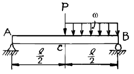
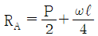
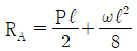
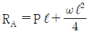
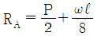
(정답률: 알수없음)
17. 지름 80 mm의 원형단면의 중립축에 대한 관성모멘트에 가장 가까운 것은?
- 0.5×106 mm4
- 1×106 mm4
- 2×106 mm4
- 4×106 mm4
(정답률: 알수없음)
18. 주평면(Principal plane)에 대한 다음 설명중 옳은 것은?
- 주평면에는 전단응력과 수직응력의 합이 작용한다.
- 주평면에는 전단응력만이 작용하고 수직응력은 작용하지 않는다.
- 주평면에는 전단응력은 작용하지 않고 최대 및 최소의 수직응력만이 작용한다.
- 주평면에는 최대의 수직응력만이 작용한다.
(정답률: 알수없음)
19. 직경 10 cm의 강재축이 750 rpm로 회전한다. 안전하게 전달시킬 수 있는 최대 동력은 얼마인가? (단, 허용전단응력 τa= 35 MPa이다.)
- 500 kW
- 539 kW
- 579 kW
- 659 kW
(정답률: 알수없음)
20. 한변의 길이가 8 cm인 정사각형 단면의 봉이 있다. 온도를 20℃상승시켜도 길이가 늘어나지 않도록 하는데 280 kN의 힘이 필요하다. 이 봉의 선팽창계수(/℃)는? (단, 봉의 탄성계수 E= 210 GPa 이다.)
- 9.63×10-6
- 10.42×10-6
- 11.2×10-6
- 11.4×10-6
(정답률: 알수없음)
2과목: 내연기관
21. 체적이 0.1m3인 용기 안에 메탄(CH4)과 공기 혼합물이 들어있다. 공기는 메탄을 연소시키는데 필요한 이론 공기량보다 20%가 더 들어 있고, 연소전 용기의 압력은 300kPa, 온도는 90℃이다. 연소전 용기안에 있는 메탄의 질량은 몇 kg 인가?
- 0.0128
- 0.2022
- 0.0614
- 0.124
(정답률: 알수없음)
22. 다음 중 디젤 노크를 방지하는 방법과 관계가 없는 것은?
- 연소실벽 특히 분무가 닿는 부분의 온도를 증가시킨다.
- 분사초기의 공기압력을 증가시킨다.
- 압축비를 낮게한다.
- 회전속도의 저하 또는 분사초기의 분사율의 저하에 의하여 급격연소에 관여하는 연료의 양을 감소시킨다.
(정답률: 알수없음)
23. LPG나 LNG를 사용하는 가스기관 연료장치의 구성부품 중 연료와 공기를 혼합하여 기관이 필요한 혼합기를 만드는 것은?
- 베이퍼라이저(vaporizer)
- 믹서(mixer)
- 기화기
- 연료분사펌프
(정답률: 알수없음)
24. 블로다운(blow down) 기간의 정의에 맞는 것은?
- 배기구멍과 소기구멍이 모두 닫혀 있는 상태
- 배기구멍은 열리고 소기구멍은 닫혀 있는 상태
- 배기구멍은 닫히고 소기구멍은 열려 있는 상태
- 배기구멍과 소기구멍이 모두 열려 있는 상태
(정답률: 알수없음)
25. 디젤기관의 연소과정 중 압력 상승율이 가장 큰 과정은?
- 착화 지연기간
- 폭발 연소기간
- 제어 연소기간
- 후연소 기간
(정답률: 알수없음)
26. 기관의 냉각계통에서 부동액의 구비조건으로 알맞지 않는 것은?
- 비등점이 높아야 한다.
- 물에 용해되지 않아야 한다.
- 부식성이 없어야 한다.
- 인화점이 높아야 한다.
(정답률: 알수없음)
27. 어느 4행정사이클, 4기통 디젤엔진의 압축비가 17:1, 연소실 체적이 30cc일 때 이 엔진의 총배기량은 몇 ℓ 인가?
- 480ℓ
- 1.92ℓ
- 1,920ℓ
- 0.48ℓ
(정답률: 알수없음)
28. 다음 중 사이드 밸브 기관의 밸브기구와 관계가 없는 것은?
- 캠리프터
- 흡배기밸브
- 로커암
- 밸브스프링
(정답률: 알수없음)
29. 기관에서 폭발행정 이외의 행정이 수행되도록 에너지를 공급하고, 각 연소실의 폭발에 의한 토크 변동을 작게하기 위한 기능의 부품은?
- 크랭크 축 풀리
- 크랭크 축
- 플라이 휠
- 피스톤
(정답률: 알수없음)
30. 다음 중 디젤연료의 착화지연(ignition lag)에 직접적인 영향을 미치는 요인으로 틀린 것은?
- 유립의 크기
- 연소실의 형태
- 분사개시전 연소실내 공기의 온도
- 연료의 분자구조
(정답률: 알수없음)
31. 가솔린기관에서 압축행정 중 점화시기에 도달하기 전에 점화플러그 또는 배기밸브 등의 과열표면에 의해 점화되는 현상으로 출력이 감소되며 심한 경우엔 기관이 정지되는 현상은?
- 디토네이션(detonation)
- 노킹(knocking)
- 포스트 이그니션(post-ignition)
- 프리 이그니션(pre-ignition)
(정답률: 알수없음)
32. 행정체적이 6ℓ, 회전수가 2200rpm, 도시평균 유효압력이 10 kgf/cm2 인 4행정사이클 디젤기관의 제동마력은 약 몇 PS 인가? (단, 기계 효율은 85 % 이다.)
- 250
- 200
- 175
- 125
(정답률: 알수없음)
33. 다음 중 내연기관의 장점에 해당되지 않는 것은?
- 시동에 소요되는 시간이 짧으며 부하변동에 민감한 순응을 한다.
- 기관의 시동, 정지, 출력조정 등이 쉬우며 정지시 열손실이 없다.
- 열교환기, 연소장치 등이 따로 필요치 않고 소형, 경량으로 제작할 수 있어 운반, 설치, 이동 등이 쉽다.
- 연소압력 및 온도가 낮기 때문에 기관 각부에 저급재질을 사용하며 윤활 및 냉각에 특별한 주의가 필요없다.
(정답률: 알수없음)
34. 고속디젤기관에 적용되는 복합사이클의 열역학적인 사이클 구성으로 맞는 것은?
- 정적과정 2개, 단열과정 2개, 정압과정1개
- 정적과정 1개, 단열과정 2개, 정압과정2개
- 정적과정 2개, 단열과정 1개, 정압과정2개
- 정적과정 3개, 단열과정 1개, 정압과정1개
(정답률: 알수없음)
35. 1 로터 방켈(Wankel)엔진은 주축의 회전수와 폭발회수의 관계로 본다면 다음 어떤 기관과 같은가?
- 2행정사이클 1실린더 기관
- 2행정사이클 3실린더 기관
- 4행정사이클 1실린더 기관
- 4행정사이클 3실린더 기관
(정답률: 알수없음)
36. Air Standard Otto Cycle에서 효율은 무엇에 비례하는가?
- 압축비와 비열비
- 공기량
- 연료량
- 엔진 모양
(정답률: 알수없음)
37. 디젤 연료의 착화성과 관계 없는 것은?
- 세탄가
- 애닐린 점
- 디젤 지수
- 출력가
(정답률: 알수없음)
38. 윤활유의 성질을 개선 향상시키기 위한 첨가제로서 적당하지 않은 것은?
- 산화 방지제
- 점도 지수 향상제
- 유동점 상승제
- 부식 방지제
(정답률: 알수없음)
39. 다음에 열거한 2행정사이클 기관의 소기방식 중 소기효율이 가장 낮은 것은?
- 횡단형 소기법(cross scavenging)
- 반전형 소기법(loop scavenging)
- 단류형 소기법(uniflow scavenging)
- 완전성층 소기법(perfectly stratified scavenging)
(정답률: 알수없음)
40. 불꽃점화기관의 화염속도에 대한 설명이다. 가장 거리가 먼 것은?
- 화염속도는 공기연료비 13:1에서 최대로 된다.
- 화염속도는 기관의 회전속도에 비례한다.
- 흡기속도가 증가하면 화염속도는 증가한다.
- 배기압력이 증가하면 화염속도는 증가한다.
(정답률: 알수없음)
3과목: 기계설계
41. 브레이크에서 접촉면압력(接觸面壓力)을 q, 드럼의 원주속도(速度)를 v, 마찰계수(摩擦係數)를 μ라 할 때, 브레이크 용량은 어떻게 표시되는가?
- μq/v
- μqv
- qv/μ
- μ/qv
(정답률: 알수없음)
42. ISO규격에 의한 용접이음의 종류가 아닌 것은?
- 양면 K형
- 양면 V형
- 양면 H형
- 양면 U형
(정답률: 알수없음)
43. 리벳이음과 비교할 때 용접이음의 특징이 아닌 것은?
- 이음효율이 높다.
- 기밀성이 좋다.
- 판의 두께에 대한 제약이 심하다.
- 변형이나 잔류응력이 발생하기 쉽다.
(정답률: 알수없음)
44. 폭과 높이가 같은 묻힘키이(sunk key)에서 길이 ℓ을 1.5d로 하고 키이의 전단저항에 의한 회전력이 축에 작용하는 회전력과 같게 설계하면 키이의 폭은 대략 얼마인가? (단,축과 키이의 허용전단 응력은 같다고 한다. 또한 축의 직경은 d이다.)
- d/2
- d/4
- d/8
- d/16
(정답률: 알수없음)
45. 안지름 1000mm인 보일러 동체가 6㎏f/㎝2의 내압을 받는다면 동체를 만든 강판의 인장강도가 30㎏f/mm2, 안전계수가 3, 이음효율이 60%, 부식여유가 1mm라고 할 때, 이 동체의 두께는 몇 mm 인가?
- 11
- 9
- 17
- 6
(정답률: 알수없음)
46. 롤러 체인에 사용하는 스프로킷에서 피치원 지름을 D, 잇수를 Z라고 하면, 피치 P를 나타내는 식은?
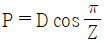
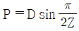
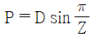
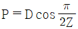
(정답률: 알수없음)
47. 평 벨트 전동에 비하여 V벨트 전동의 특징에 관한 설명으로 틀린 것은?
- 평행한 2축 사이에 평행걸기로 전동할 때 사용된다.
- 이음매가 없으므로 운전이 정숙하고, 충격을 완화한다.
- 미끄럼이 적고, 보다 확실한 동력의 전달을 할 수 있다.
- 축간거리가 연장되므로 설치 장소가 많이 필요하다.
(정답률: 알수없음)
48. 표준 직선치 베벨기어(Bevel gear)에서 속도비 i = N2/N1를 나타내는 관계식으로 옳은 것은? (단, 외접의 경우) (단, N1, N2 : 피니언 및 기어의 회전수 rpm, D1, D2 : 피니언 및 기어의 피치원 지름, Z1, Z2 : 피니언 및 기어의 잇수, α1, α2 : 피니언 및 기어의 피치원추각이다.)
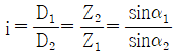
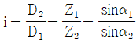
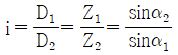
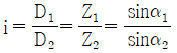
(정답률: 알수없음)
49. 볼 베어링(ball bearing)의 동적하중 용량이 500㎏f일 때, 500㎏f의 베어링 하중이 작용하는 축에 끼워 250시간을 사용 하려면,축을 몇 rpm 시켜야 하는가?
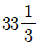
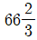
- 500
- 1000
(정답률: 알수없음)
50. 표준 스퍼어 기어에서, 이 끝 높이는? (단, a : 이 끝 높이, d : 이 뿌리 높이, p : 원주피치, m : 모듈이다.)
- ａ = ｄ
- ａ = ｐ
- ａ = ｍ
- ａ = p/2
(정답률: 알수없음)
51. 접촉면의 안지름 150mm, 바깥지름 250mm인 단판 클러치로 1200rpm, 25PS의 동력을 전달할 때, 클러치를 미는 힘은? (단, 접촉면의 마찰계수는 0.25이다.)
- 1000.2㎏f
- 864.1㎏f
- 596.8㎏f
- 299.3㎏f
(정답률: 알수없음)
52. KS규격에 의한, 유니파이 보통나사
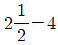
UNC의 피치는?- 2.50mm
- 4.50mm
- 6.35mm
- 10.16mm
(정답률: 알수없음)
53. 150rpm으로 5㎾의 동력을 전달하는 중실 원형축의 지름은? (단, 허용 전단응력은 220㎏f/㎝2이다.)
- 약 35.4mm
- 약 39.6mm
- 약 42.2mm
- 약 48.8mm
(정답률: 알수없음)
54. 압축코일 스프링의 지름이 8㎝, 와이어의 지름이 1.6㎝, 코일의 유효권수가 12이고, 500㎏f의 하중이 작용할 때 응력 τ는? (단, 와알(Wahl)의 수정계수 K = 1.3)
- τ ≒ 3980㎏f/㎝2
- τ ≒ 3233㎏f/㎝2
- τ ≒ 2⑤0㎏f/㎝2
- τ ≒ 1461㎏f/㎝2
(정답률: 알수없음)
55. 웜기어에서 웜의 줄수를 3, 웜휠의 잇수를 60 이라고 하면 웜휠은 얼마로 감속되는가?
- 1/10
- 1/20
- 1/30
- 1/40
(정답률: 알수없음)
56. 페더키이(feather key) 또는 안내키이라고도 부르는 키이의 명칭은?
- 둥근키이
- 미끄럼키이
- 반달키이
- 접선키이
(정답률: 알수없음)
57. 나사의 강도에서 볼트가 축방향의 힘(W)만을 받는 경우, 볼트의 외경(d)은 나사재료의 허용인장응력(σ)과 대략 어떤 관계가 있는지 옳은 것은? ( 단,볼트의 골지름 d1 = 0.8d 이다.)
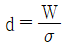
(정답률: 알수없음)
58. 1줄 나사의 바깥지름에 있어서의 리드각이 다음 중 가장 큰 것은? (d=바깥지름, P=피치)
- d = 30mm, P = 3.5mm
- d = 48mm, P = 5mm
- d = 36mm, P = 4mm
- d = 20mm, P = 2.5mm
(정답률: 알수없음)
59. 기본부하 용량이 1800㎏f인 보올 베어링이 베어링 하중 300㎏f을 받고 100rpm으로 회전할 때 이 베어링의 수명은?
- 36000시간
- 34000시간
- 38000시간
- 37000시간
(정답률: 알수없음)
60. 각속도 ω(㎭/s)로 H(㎰)를 전달하는 축에 작용하는 토크 T(m-㎏f)의 식은 다음의 어느 것인가?
(정답률: 알수없음)
4과목: 철도차량공학
61. GT26CW형 디젤전기기관차의 견인마력 HP 는?
- 1000HP
- 1500HP
- 2000HP
- 3000HP
(정답률: 알수없음)
62. 열차가 50km/h로 주행 중 전방의 건널목에 선로를 지장하고 있는 자동차를 발견하고, 즉시 비상제동을 조작하여 13.4초 후에 정지하였다. 전제동거리는 약 몇 m 인가? (단, 공주시분은 1.0초 이다.)
- 90
- 100
- 110
- 120
(정답률: 알수없음)
63. 전후동력 새마을호 디젤동차 전기장치 조작 스위치 중 접지확인 스위치는?
- ARS
- ERS
- GRS
- URS
(정답률: 알수없음)
64. MTU396계 디젤기관의 좌·우 실린더 각도는?
- 45°
- 60°
- 90°
- 120°
(정답률: 알수없음)
65. 유조차 안전변의 동작압력은?
- 1kgf/cm2
- 1.75kgf/cm2
- 2kgf/cm2
- 2.75kgf/cm2
(정답률: 알수없음)
66. 디젤전기기관차의 주발전기에 있는 타여자 계자는?
- 분권계자
- 축전지계자
- 차동계자
- 보상계자
(정답률: 알수없음)
67. 디젤전기기관차에서 사용되는 주발전기 계자가 아닌 것은?
- 시동계자
- 차동계자
- 분권계자
- TM계자
(정답률: 알수없음)
68. 축 스프링용으로 사용되는 고무 스프링의 특징이다. 잘못 기술된 것은?
- 축상과 대차 프레임 사이의 마찰이 없다.
- 어떤 상대운동이 발생해도 원추형 고무스프링은 항상 수직운동과 인장응력만을 받는다.
- 고무자체의 히스테리시스 현상이 적절한 댐핑 효과를 발생한다.
- 레일로부터 차체에 전달되는 소음의 절연효과가 크다.
(정답률: 알수없음)
69. 대차의 사행운동을 방지하는 방법 중 하나는?
- 차륜 답면 구배를 작게
- 고정축거를 작게
- 대차의 회전저항을 적절히 작게
- 차축 저널박스의 지지 강성을 약하게
(정답률: 알수없음)
70. GT26CW형 디젤전기기관차의 최소 곡선반경은?
- 55.8m
- 58.8m
- 76.2m
- 45.7m
(정답률: 알수없음)
71. 디젤기관에서 연소실 체적은?
- 실린더 체적
- 행적 체적
- 실린더 간극 체적
- 분사변의 끝부분
(정답률: 알수없음)
72. 열차운행 중 냉방기에서 지나친 진동과 소음이 발생할 수 있는 원인과 가장 거리가 먼 것은?
- 압축기의 고장
- 증발기 팬 조립 볼트 풀림
- 베어링의 불량으로 증발기 팬 모터에서 나는 소음
- 냉매 과충진
(정답률: 알수없음)
73. 기관의 저유압 원인이 아닌 것은?
- 압력 완해변 또는 압력 조정변의 고착
- 펌프 압력측에서 윤활유가 누설될 때
- 유냉각기가 폐색 되어 윤활유의 점도 불량일 때
- 윤활유의 점성이 낮거나 냉각불량 할 때
(정답률: 알수없음)
74. 전후동력 새마을호 디젤동차 열차제어기 구성 중 차륜공전모듈은?
- FBM
- WSM
- WLM
- SRM
(정답률: 알수없음)
75. 방진고무의 특성으로서 맞지 않는 것은?
- 진동감쇄효과가 크다.
- 큰 탄성변형을 줄 수 있다.
- 스프링정수가 선형(線形)이다.
- 고주파진동의 흡수능력이 좋다.
(정답률: 알수없음)
76. 전기기관차의 CTF 및 INV 분해검사 및 장력 조정은 어느 검종 검수에서 시행하는가?
- 6개월 검수
- 1년 검수
- 2년 검수
- 4년 검수
(정답률: 알수없음)
77. 차량용 냉방기에서 저온저압의 기체상태인 냉매를 고온 고압의 기체 상태로 변화시키는 장치는?
- 증발기(Evaporator)
- 압축기(Compressor)
- 응축기(Condenser)
- 팽창밸브(Expanison valve)
(정답률: 알수없음)
78. 자중 37ton인 객차 공차의 차중률은?
- 0.925
- 0.937
- 1.024
- 1.115
(정답률: 알수없음)
79. DHC의 결함상태가 최대 정격속도에 미치지 못하게 하는 원인 중 이에 해당되지 않는 것은?
- 연료 공급부족과 공기공급 부족시
- 충전공기 저압과 분사장치 결함
- 제어결함 및 실린더 압축 부적합
- 냉각수온 감시 장치 결함
(정답률: 알수없음)
80. 전기차에서 사용하는 무접점계전기의 특징이 아닌 것은?
- 응답성이 빠르다.
- 전기적 외란에 강하다.
- 설정 감도의 조정이 용이하다.
- 정밀도가 높다.
(정답률: 알수없음)
5과목: 기계제작법
81. 열처리의 종류에 해당되지 않는 것은?
- 오스템퍼링(austempering)
- 스웨이징(swaging)
- 마르템퍼링(martempering)
- 노멀라이징(normalizing)
(정답률: 알수없음)
82. 주철에서 Si 가 미치는 영향을 옳게 설명한 것은?
- 탄소를 흑연화 시킨다.
- MnS 을 만들어 탈황 작용을 한다.
- 흑연의 생성을 방해한다.
- Fe3O2 를 만들어 탈산작용을 한다.
(정답률: 알수없음)
83. 드릴 홈 등과 같은 골의 지름을 재는 마이크로미터는 무엇인가?
- 다이얼 게이지부 마이크로미터
- 버니어부 마이크로미터
- 포인트 마이크로미터
- V앤빌 마이크로미터
(정답률: 알수없음)
84. 극히 정확한 치수를 가지는 견고한 금형(金型)에 가압 주입하여 주물을 만드는 주조법은?
- 셸 몰딩법( shell moulding )
- 다이캐스팅법( die casting )
- 원심 주조법( centrifugal casting )
- 인베스트먼트법( investment casting )
(정답률: 알수없음)
85. 소성 가공의 방법이 아닌 것은?
- 컬링 ( curling )
- 엠보싱 ( embossing )
- 카핑 ( copying )
- 코이닝 ( coining )
(정답률: 알수없음)
86. 다이스 (dies) 및 체이서 (chaser)를 만들 때 쓰는 공구는?
- 핸드 탭 (hand tap)
- 머신 탭 (machine tap)
- 매스터 탭 (master tap)
- 파이프 탭 (pipe tap)
(정답률: 알수없음)
87. 다음 중 선반에 이용되는 고정기구가 아닌 것은?
- 처킹(chucking)에 의한 고정기구
- 면판(face plate)에 의한 고정기구
- 바이스에 의한 고정기구
- 방진구에 의한 고정기구
(정답률: 알수없음)
88. 표준 드릴에서 여유각(clearance angle)은 얼마로 하는가? (단, 가공할 재료는 일반재료이다.)
- 12 ∼ 15°
- 17 ∼ 20°
- 20 ∼ 32°
- 30 ∼ 40°
(정답률: 알수없음)
89. 전기 화학가공(전해 가공)의 공작액은?
- 변압기유
- 산성 수용액
- 터어빈유
- 식염수
(정답률: 알수없음)
90. 전기저항 용접에서 I : 전류(A), R : 전기저항(Ω), t : 시간(sec)일 때 다음 중 발생열량 Q(cal)를 옳게 나타내는 식은?
- Q=0.14 I2 Rt
- Q=0.24 I2 Rt
- Q=0.34 I2 Rt
- Q=0.44 I2 Rt
(정답률: 알수없음)
91. 선반의 크기를 정하는 규격이 아닌 것은?
- 베드위의 스윙
- 왕복대위의 스윙
- 베드의 높이
- 양쎈터 사이의 최대 거리
(정답률: 알수없음)
92. 공구연삭기에 A60N5V 의 연삭숫돌을 고정하였다. 숫돌의 외경은 12″ , 직결전동기의 회전수가 1800 rpm이라 하면 숫돌의 원주속도는 몇 m/min 정도인가?
- 1321.2
- 1450.3
- 1625.5
- 1723.6
(정답률: 알수없음)
93. TIG 용접 및 MIG 용접은 어느 용접에 해당되는가?
- 불활성가스 아크 용접
- 직류 아크 일미나이트계 피복 용접
- 교류 아크 셀룰로스계 피복 용접
- 서브머지드 아크 용접
(정답률: 알수없음)
94. 그림과 같은 용기(容器)를 드로잉(drawing)하는 데, 소요되는 소재판의 지름을 구하는 식으로 옳은 것은?
(정답률: 알수없음)
95. 주조품의 수량이 적고 형상이 큰 곡관 (bend pipe)을 만들 때 가장 적합한 목형은?
- 회전형
- 부분형
- 코어형
- 골격형
(정답률: 알수없음)
96. V는 절삭속도(m/min), T는 공구수명(min), n는 공구와 공작물에 의해 변하는 지수, C는 공구, 공작물, 절삭조건에 따라 변하는 값 상수라 할 때, 그 관계식이 다음 중 옳은 것은?
- V nT=C
- VT=C2
- VT=C
- VTn=C
(정답률: 알수없음)
97. 지름 50 mm 인 연강봉을 20 m/min 의 절삭속도로 선삭할 때 주축의 회전수는?
- 약 100.1 rpm
- 약 127.3 rpm
- 약 440.5 rpm
- 약 527.7 rpm
(정답률: 알수없음)
98. 진원의 수정, 진직도(眞直度)의 수정 및 평면도 (平面圖)의 수정을 모두 할 수 있는 것은?
- 연삭(grinding)
- 호우닝(honing)
- 브로우칭(broaching)
- 래핑(lapping)
(정답률: 알수없음)
99. 다음 중 전기저항 용접에 해당되는 것은?
- TIG용접
- 스텃용접
- MIG용접
- 프로젝션용접
(정답률: 알수없음)
100. 보석, 유리, 자기 등을 정밀가공하는데 가장 적합한 가공방법은?
- 전해연삭
- 화학연마
- 초음파 가공
- 전해연마
(정답률: 알수없음)
P = (G * R^4 * Φ) / (d * 2)
여기서 Φ는 소선의 비틀림각을 나타내는 값이다. 이 식에서 R^4은 코일의 반지름이 제곱된 값이므로, 코일의 지름이 더 크면 P값이 더 커지게 된다. 반면에 소선의 지름이 더 작으면 P값이 더 커지게 된다. 따라서, 보기 중에서 코일의 지름과 소선의 지름이 모두 작은 ""이 정답이 된다.